어떤 영상을 만들 수 있나요
영상은 결과물부터 보여 줘요. 왼쪽은 조회수 2,900만을 넘긴 쇼츠이고, 오른쪽은 한 달 만에 800만 조회수가 나온 졸라맨 스타일 쇼츠예요. 오른쪽 화면 위에 적힌 'DAY 1 · 6 MPH', 'DAY 28 · ??? MPH' 같은 큰 자막이 이 장르의 전형적인 모습이에요.
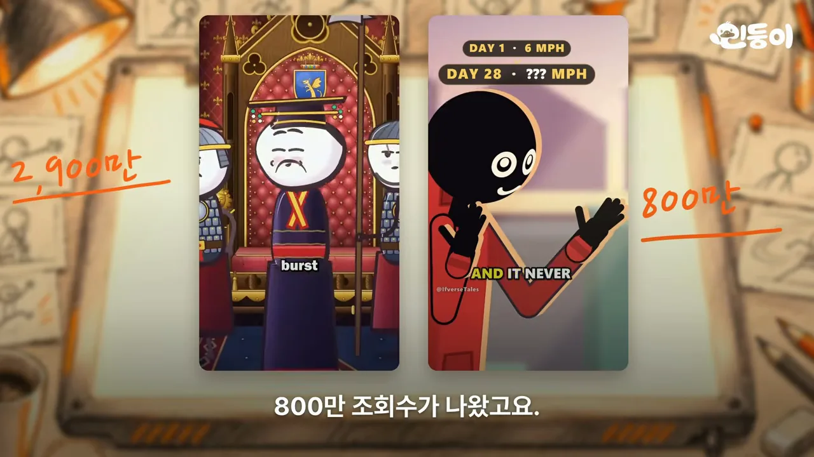
이어서 발표자가 직접 만든 영상이 1분 반쯤 흘러요. 1971년 미국에서 일어난 D.B. 쿠퍼 비행기 납치 사건을 졸라맨 캐릭터로 재현한 이야기예요. 검은 양복에 선글라스를 낀 남자가 폭탄이 있다며 돈과 낙하산을 요구하고, 비 오는 밤하늘로 뛰어내린 뒤 사라지는 줄거리예요. 내레이션, 장면 그림, 카메라 움직임, 효과음이 다 들어 있어요.
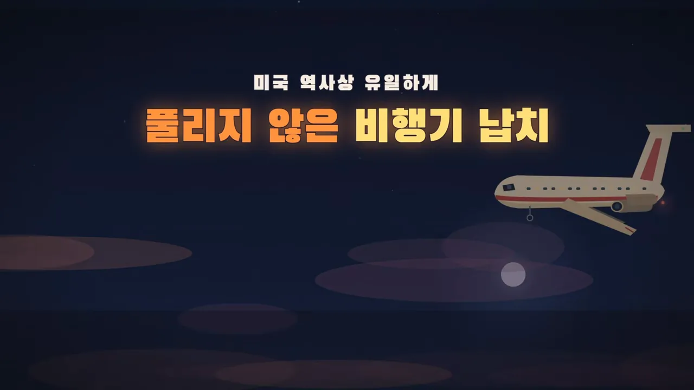
발표자가 강조하는 건 두 가지예요. 대본부터 목소리까지 생각할 것 없이 "딸깍"으로 끝났다는 점, 그리고 유료 영상 생성 서비스 없이 무료 모델로 만들었다는 점이에요.
세 단계로 따라 하기
무료 모델이라는 말의 근거로 영상은 오픈코드 안내 문구를 띄워요. 주황색으로 칠한 두 이름, GLM-5.3-Flash Free와 DeepSeek V4.1 Flash Free가 데모에 쓴 모델이에요. 둘 다 '한시적으로 오픈코드에서 무료'라고 적혀 있어요.
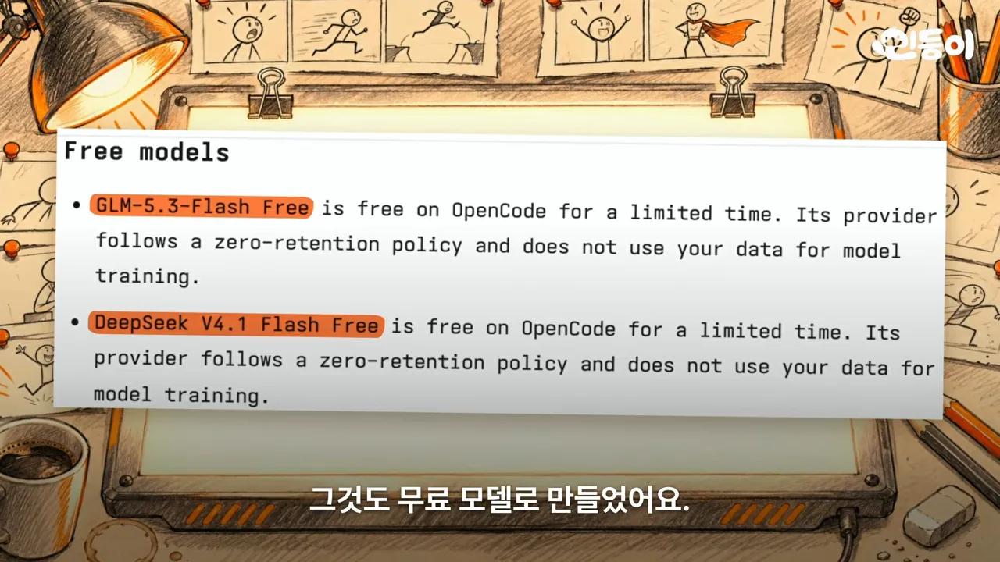
전체 흐름은 세 단계예요. 사람이 하는 일은 맨 앞 두 단계의 준비와 주제 한 줄뿐이고, 나머지는 스킬이 알아서 해요.
flowchart LR A["1단계 준비물
AI 도구 + 일레븐랩스 API 키"] --> B["2단계 스킬 설치
저장소 링크를 AI에게"] --> C["3단계 주제 던지기
한 줄 입력"] --> D["쇼츠 완성
대본·그림·카메라·목소리·효과음"]
1단계: 준비물
필요한 건 지금 쓰는 AI 도구 하나와 일레븐랩스예요. 화면에는 클로드 코드 소개 페이지 옆에 '쓰던 거 아무거나'라는 메모가 붙어 있고, 그 위로 일레븐랩스 첫 화면이 겹쳐 있어요. 일레븐랩스는 목소리와 효과음을 만드는 서비스인데, 로그인만 하면 한 달에 무료 크레딧 1만 개를 줘요. 발표자는 쇼츠 여러 편은 충분히 나온다고 해요. 여기서 API 키 하나만 받아 두면 돼요.
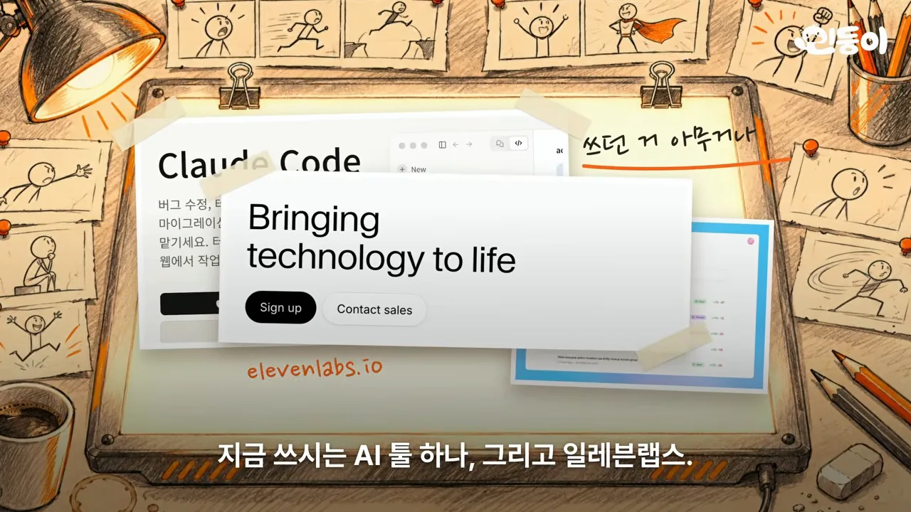
| 준비물 | 영상에서 쓴 것 | 비용 |
|---|---|---|
| AI 도구 | 클로드 코드, 코덱스, 오픈코드 중 아무거나 (데모는 오픈코드) | 데모는 무료 모델 |
| 목소리·효과음 | 일레븐랩스 API 키 | 무료 크레딧 월 1만 개 |
| 스킬 | GitHub 저장소 kelano86/what-if-animation | 무료 |
2단계: 스킬 설치
해외 유튜버가 이런 영상들을 모아 뜯어보고 만든 스킬이 있어요. 화면에 뜬 저장소 이름은 kelano86/what-if-animation이고, 안에 opencode/commands, references, scripts 폴더가 보여요. 링크는 영상 설명란에 있어요.
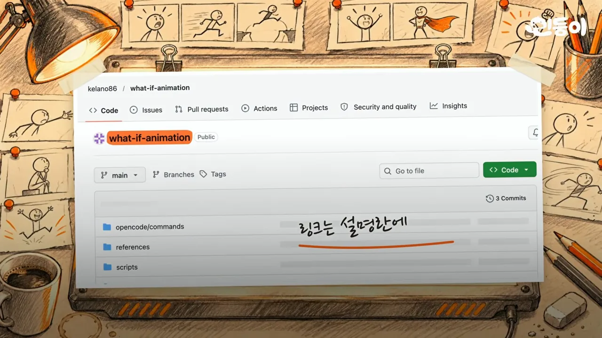
opencode/commands 폴더가 있어서 오픈코드에서도 바로 불러 쓸 수 있어요.
영상 02:23에서 보기
설치는 명령어를 직접 치지 않아요. 저장소 링크를 복사해서 AI 입력창에 아래 문장과 함께 붙여 넣으면, AI가 스킬을 깔고 필요한 프로그램까지 알아서 설치해요.
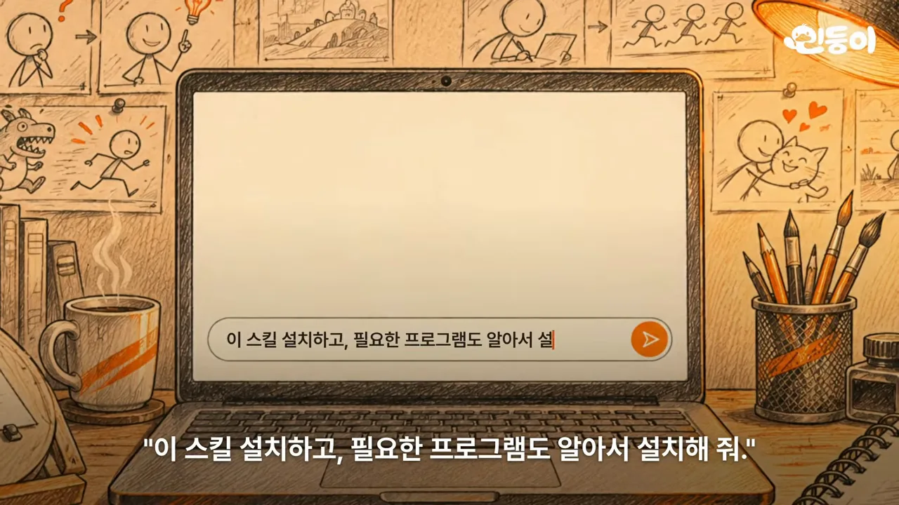
3단계: 주제 던지기
이제 남은 건 주제 한 줄이에요. 화면의 입력창에는 'D.B. 쿠퍼 비행'까지 쳐 있어요. 발표자는 "D.B. 쿠퍼 비행기 납치 사건을 재현해 줘"라고만 입력했어요.
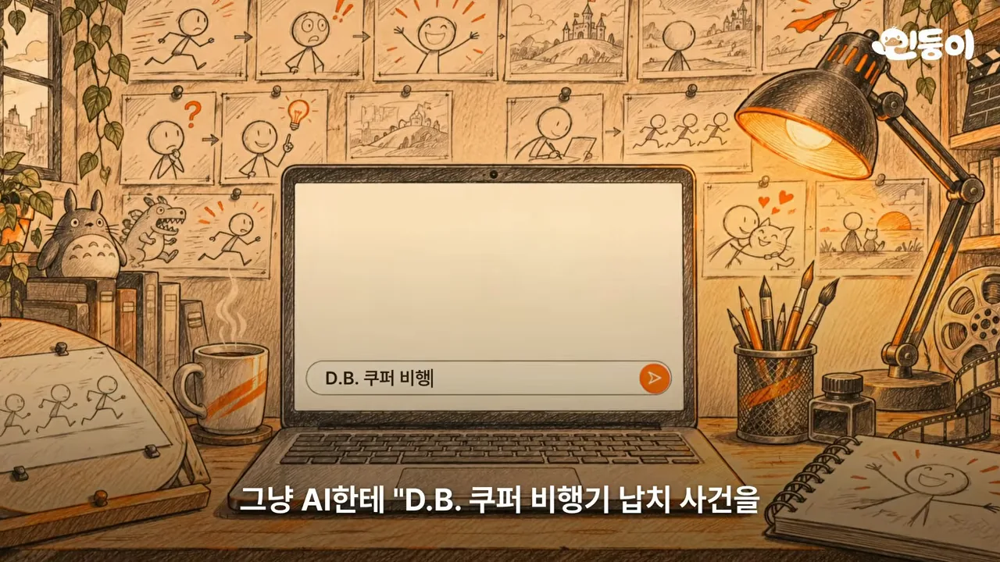
무료 모델 결과와 더 다듬는 법
발표자는 클로드 코드나 코덱스는 당연히 잘 만들 테니, 일부러 오픈코드의 무료 모델로 두 번 돌려 봤어요. 첫 번째는 DeepSeek 결과예요. 왼쪽 위에 '딥시크'라는 표시가 있고, 비 오는 밤에 비행기 뒤쪽 계단에 선 남자가 보여요.
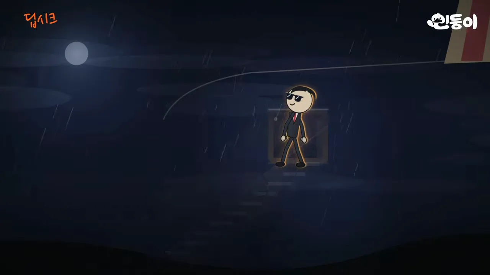
두 번째는 GLM 결과예요. 남자가 요구한 세 가지를 '요구'라는 점선 상자 안에 아이콘으로 늘어놨어요. 초록색 돈다발에 20만 달러, 빨간 낙하산에 낙하산 네 개, 노란 트럭에 연료 트럭이라고 적혀 있어요.
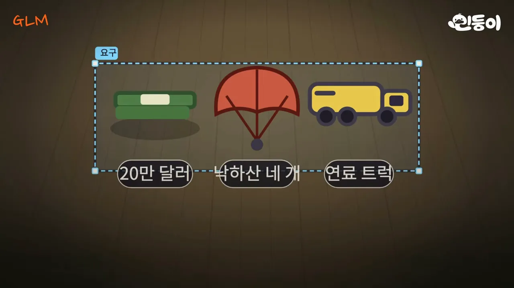
발표자는 주제 한 줄 말고는 따로 손댄 게 없다고 해요. 그런데도 이 정도가 나오니, 장면을 더 자세히 시키고 편집까지 하면 훨씬 좋아질 거라고 덧붙여요.
목소리 바꾸기
원하는 목소리로 바꾸고 싶으면 일레븐랩스에서 목소리를 고르고 그 음성 ID를 AI에게 주면 돼요. 화면에 뜬 일레븐랩스 도움말은 My Voices에서 원하는 목소리의 More actions(점 세 개) 버튼을 눌러 Copy voice ID를 고르라고 안내해요.
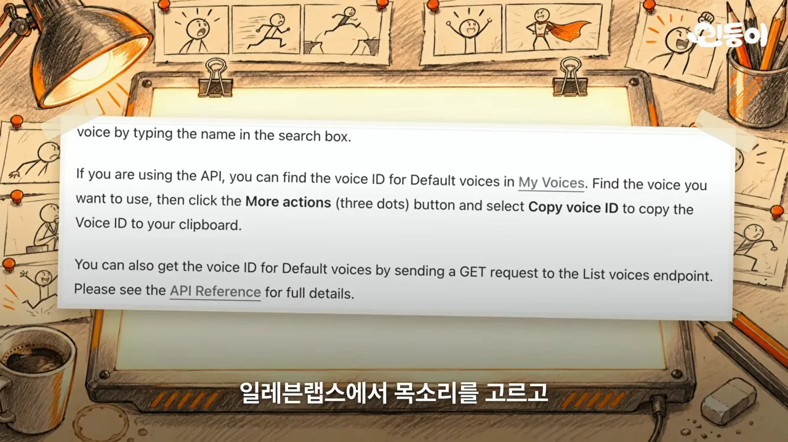
2,900만 조회수 3D 스타일은 따로
맨 처음 보여 준 2,900만 조회수 영상 같은 3D 스타일은 다른 레시피가 있어요. 화면 속 쇼츠는 성과 들판이 있는 입체 배경 위에 평면 캐릭터가 앉아 있는 모습이고, 옆에 '3D 레시피'라는 메모가 붙어 있어요.
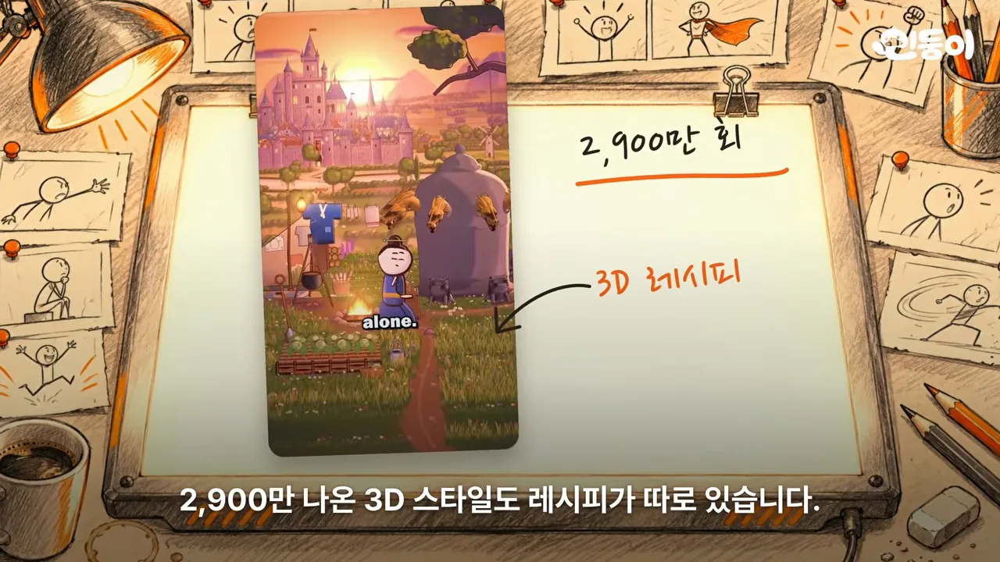
이 레시피는 이런 쇼츠 스무 편을 한 프레임도 빼지 않고 분석해서 조명과 카메라 움직임까지 숫자로 재서 만들었다고 해요. 다음 화면 왼쪽 파일 목록에 measure.py와 STYLE_BIBLE.md가 보이고, 가운데에는 영상을 프레임 단위로 잘라 늘어놓은 이미지가 떠 있어요. 오른쪽 코드에서 밑줄 친 median(shots), percentile(lum, 98)이 컷 길이와 밝기를 숫자로 잰 흔적이에요. 다만 3D라서 렌더링이 꽤 오래 걸린다고 해요.
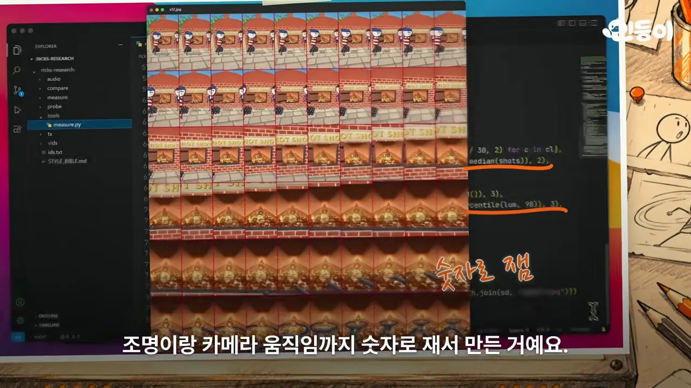
영상은 세 단계로 마무리해요. 일레븐랩스 키를 받고, 스킬을 설치하고, 주제를 던지는 거예요. 발표자는 주제 하나를 잘 잡아 무료로 쇼츠 채널을 운영해 보라고 권해요.